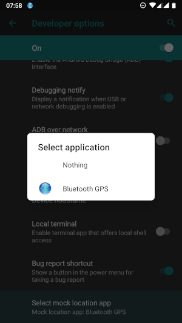
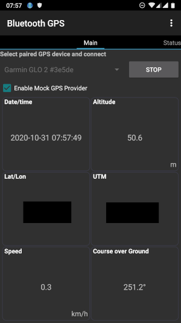

Using external GPS
It is possible to use an external GPS device with Input app. Input does not offer an interface to connect, set up or configure the external GPS device. The set up should be carried out from the device operating system (e.g. Android or iOS).
Once the GPS source is configured from the OS level, Input will use the signal from the configured source to display or capture location data.
It is therefore important to note, first your mobile or tablet offers the functionality to connect with an external GPS device at the system level and secondly, the external GPS device communicates with the mobile/tablet through a standard interface.
For example, earlier Android devices did not offer system level GPS override from an external device.
In this section, we explore connecting to an external GPS device through Bluetooth using Android and iOS mobiles/tablets.
Android
To use an external GPS with your Android mobile/tablet:
- Ensure you are using Android 6 or later (Input does not support earlier Android!)
- Your external GPS can be paired with your mobile/tablet through Bluetooth
Next step is to install an app to provide mock location to Input. For that, we recommend using Bluetooth GPS from the Google Play Store.
Android offers Allow mock locations to use the GPS apps (e.g. Bluetooth GPS app) as your source of GPS signal. The option is an advanced setting under Developers options. To enable Allow mock locations:
- In Android device, enable Developer options. This is by default a hidden option under your system settings. To be able to see the options:
- On newer Android versions, go to Android Settings > About phone and then scroll down to find the Build number. Tap the build number 7 times and a message appears with a count-down until you become a developer. -On older Android versions, the developer settings can be made visible under the Android Settings > Applications > Development.
- Once you have the developers option enabled, go to System > Advanced > Developer options > Select mock location app and select Bluetooth GPS

Now, pair your external GPS device to your mobile/tablet through Bluetooth. Then open the Bluetooth GPS app and from the Select paired GPS device and connect drop-down menu, select your external GPS. Make sure you have also selected the box for Enable Mock GPS Provider. Select Connect. You can now open Input and it should be using the external GPS device.

iOS
To use your external GPS device with iPhone or iPad, you need to pair the device via Bluetooth. Once the device is paired, the signal from external GPS will be used as the primary source.
Note: users have reported that they have to switch on Airplane mode to be able to use the external GPS device.